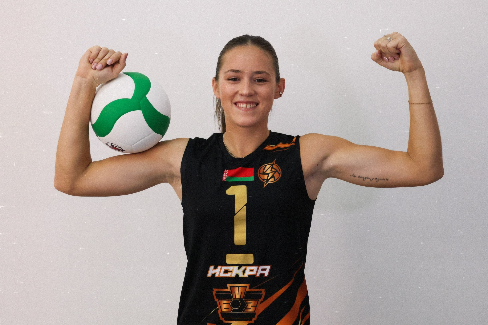

Капитан «Искры»
Волейбол
Надежда Сергеевна Тишкова (род. 22 марта 2007, Жлобин) — белорусская волейболистка, доигровщица и капитан жлобинской «Искры», одна из самых ярких молодых спортсменок страны. Выступает сразу в двух видах: классическом и пляжном волейболе, причём в обоих уже стала чемпионкой Беларуси, не дожив до 20 лет.
Надежда — воспитанница жлобинского Центра олимпийского резерва. В 2023 году на базе хоккейного клуба «Металлург» при поддержке райисполкома, ЦОРа и БМЗ создали женскую волейбольную команду «Искра», и Тишкова оказалась в её составе с первого сезона.
В «Искре» Надежда быстро выросла в лидера и капитана команды. В 2025 году «Искра» впервые в истории клуба выиграла Кубок Беларуси, «всухую» обыграв действующего чемпиона страны минскую «Минчанку» (3:0). В финале Тишкова стала самым результативным игроком команды наравне с Елизаветой Качан — по 15 очков.
На песке Надежда добилась ещё более громких результатов: 2024 и 2025 — чемпионка Беларуси по пляжному волейболу. В 2026 году её партнёршей стала Виктория Секретова, и пара сразу выстрелила: сначала они выиграли чемпионат Беларуси, а в сентябре взяли серебро Кубка Победы в Минске. Тишкова играет в амплуа доигровщицы при росте 178 см, имеет звание КМС.